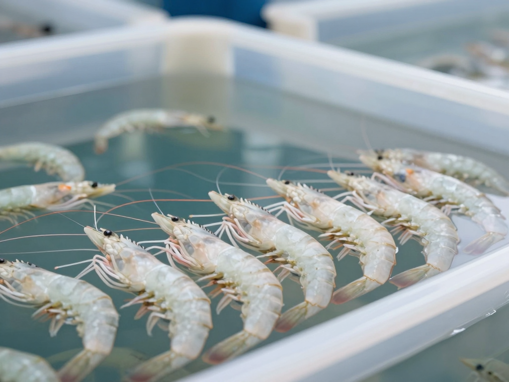

腸道黏膜與硬組織支持提升成活與增重
弧菌壓力與白便現象改善
成活與增重，是水產養殖收益的兩大槓桿
以下數字為產業宣稱 / 田間案例參考，非受控實驗室保證。

依飼料類型與養殖階段調整添加量
將活力得®均勻混入浮性 / 沉性飼料，1 公斤兌入 1 噸全價飼料。
自幼苗期至出塘全段使用，支持黏膜與硬組織發育。
避免高溫製粒破壞活性；存放陰涼乾燥處；依標籤用法使用。
| 物種 / 階段 | 建議添加量 | 使用時段 |
|---|---|---|
| 魚類育成 | 500–1000 g / 噸飼料 | 育苗至出塘 |
| 蝦類育成 | 500–1000 g / 噸飼料 | 育成全段 |
| 親本繁殖 | 800–1000 g / 噸飼料 | 繁殖準備期 |
本頁賣點數字為產業宣稱 / 田間案例參考，並非實驗室對照實證保證，實際效果因養殖與栽培環境而異。